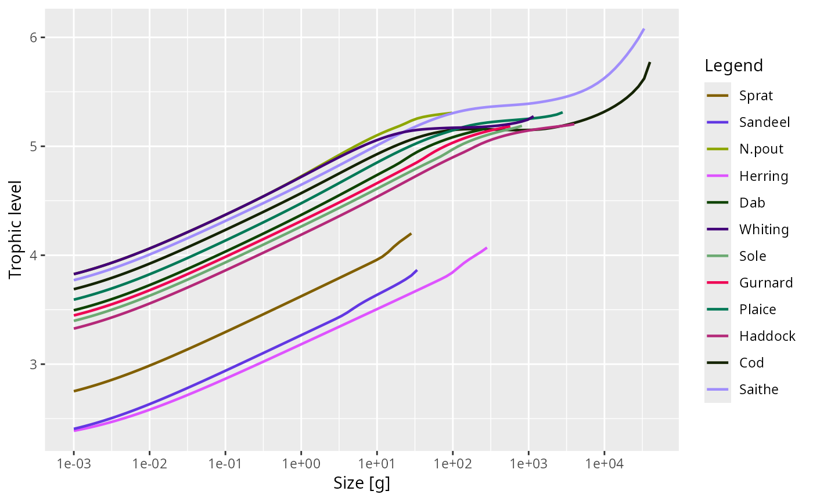

![[Experimental]](figures/lifecycle-experimental.svg) Calculates the trophic level of individuals of each species at each size,
assuming the system is in a steady state. The trophic level of an individual
is defined as 1 more than the consumption-rate-weighted average trophic level
of all the prey it has consumed during its lifetime up to the current size.
The resource is given a size-dependent trophic level (see below).
Calculates the trophic level of individuals of each species at each size,
assuming the system is in a steady state. The trophic level of an individual
is defined as 1 more than the consumption-rate-weighted average trophic level
of all the prey it has consumed during its lifetime up to the current size.
The resource is given a size-dependent trophic level (see below).
Usage
getTrophicLevel(
params,
n = initialN(params),
n_pp = initialNResource(params),
n_other = initialNOther(params),
w_R = 1e-10,
beta_R = 1000,
...
)Arguments
- params
A MizerParams object.
- n
A matrix of species abundances (species x size). Defaults to the initial abundances stored in
params.- n_pp
A vector of the resource abundance by size. Defaults to the initial resource abundance stored in
params.- n_other
A named list of the abundances of other dynamical components. Defaults to the initial values stored in
params.- w_R
An average size (in grams) of primary producers in the resource spectrum, used to set the size-dependent resource trophic level. Defaults to
1e-10.- beta_R
An average predator/prey mass ratio for the resource spectrum, used to set the size-dependent resource trophic level. Must be greater than
1. Defaults to1000.- ...
Unused
Value
An ArraySpeciesBySize object (species x size) with the trophic
level of individuals at each size. Entries below the egg size of each
species are NA.
Details
In the traditional non-size-resolved approach, all individuals of a species have the same diet composition \(D_{ij}\), defined as the proportion of total biomass intake of species \(i\) that comes from species \(j\). The trophic levels then satisfy $$T_i = 1 + \sum_j D_{ij}\,T_j,$$ which is solved as a linear system \((I - D)\,\mathbf{T} = \mathbf{1}\).
In mizer, diet composition changes as an individual grows, so we must integrate over the individual's lifetime. Assuming a steady state so that the growth rate \(g_i(w)\) and prey densities depend only on size and not on time, we can replace the integral over time since birth by an integral over weight using \(dt = dw / g_i(w)\). The trophic level \(T_i(w)\) of an individual of species \(i\) at weight \(w\) is then $$ T_i(w) = 1 + \frac{ \int_{w_0}^{w} \frac{1}{g_i(w')} \sum_j \int r_{ij}(w', w_p)\, T_j(w_p)\, dw_p\, dw' }{ \int_{w_0}^{w} \frac{1}{g_i(w')} \sum_j \int r_{ij}(w', w_p)\, dw_p\, dw' }, $$ where \(w_0\) is the egg size and \(r_{ij}(w, w_p)\) is the rate at which a predator of species \(i\) at weight \(w\) consumes biomass from prey species \(j\) at weight \(w_p\): $$ r_{ij}(w, w_p) = \theta_{ij}\,\gamma_i(w)\,(1 - f_i(w))\,\phi_i(w/w_p)\, N_j(w_p)\,w_p. $$ The sum over \(j\) runs over all species and the resource. The resource is assigned a size-dependent trophic level $$ T_R(w) = \max\left(1,\; 1 + \frac{\log(w / w_R)}{\log(\beta_R)}\right), $$ where \(w_R\) is an average size of primary producers (which therefore have trophic level 1) and \(\beta_R\) is an average predator/prey mass ratio for the resource (for example zooplankton). This adds one trophic level for each factor of \(\beta_R\) increase in resource size, with a floor at 1 so that the resource trophic level never drops below the primary-producer level. Both the numerator and the denominator (which equals the total biomass consumed over the predator's lifetime from egg size to current weight \(w\)) therefore include the resource.
This equation can be viewed as a linear system \((I - D)\,\mathbf{T} = \mathbf{1}\) in which the entries of \(\mathbf{T}\) are indexed by \((i, w)\) and the matrix \(D\) encodes the lifetime-integrated diet composition. The system is solved iteratively from small to large sizes, exploiting the fact that prey are typically much smaller than the predator (large predator-to-prey mass ratio), so that the trophic levels of all relevant prey sizes are already known when computing \(T_i(w)\).
See also
Other summary functions:
getBiomass(),
getDiet(),
getGrowthCurves(),
getN(),
getSSB(),
getTrophicLevelBySpecies(),
getYield(),
getYieldGear()
Examples
tl <- getTrophicLevel(NS_params)
plot(tl)
